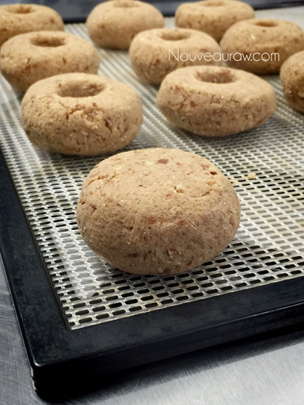

Old Fashioned Apple Spiced Doughnuts

~ raw, vegan, gluten-free ~
If you were blindfolded and asked to take a bite of this doughnut, you might struggle to pinpoint a distinctive flavor. There is no strong, overwhelming taste… instead, there is just a subtle sweetness and a warm mingling aftertaste of apple, clove, nutmeg, and cinnamon… it’s like biting into Autumn if that were at all possible.
They can be enjoyed as is… a dense, spongy, richly spiced doughnut but you can take it to a whole new level by dipping them into raw chocolate ganache and sprinkling crushed pecans on top. But before we move forward, I need… want to share with you a few ingredients that I chose to use and why. So let’s begin.
Almond pulp…
Every batch of pulp will differ in moisture. This depends on how much of the milk you are able to squeeze from the nut bag. Therefore, you may need to adjust the amount of liquids being used in pulp recipes. If it is really dry feeling, more moisture may need to be added. Or if the pulp is really wet, less moisture would probably be necessary.
It is also best to make sure that the pulp is unflavored and that is a step that has to be taken when creating almond milk. There is a link below that you can click on to learn more about this process if you are unfamiliar with it. BUT should your pulp already have small hints of sweetness to it, not to worry… I doubt it would be enough to affect the outcome of this cake. I don’t recommend any substitutions for the almond pulp. It is the key ingredient that helped me to create a light and airy cake batter.
Irish Moss Gel or Kelp Paste
It is a must that I touch base on this ingredient because it pops up every so often. The main question, “Do I have to use it? Or What can I use instead?” Anything is possible when it comes to subbing out ingredients. But I do spend a lot of time developing recipes to have great flavor, texture, and appearance.
Since many people have a hard time finding Irish moss (unless mail-ordered), I came up with the idea of creating a paste from raw kelp noodles. I can now happily report that both worked perfectly. The purpose behind these pastes/gels is to give some added nutrition but equally important… the bread-like texture. If you are dead-set against using these ingredients, my next go to would be a few tablespoons of psyllium husks. Have fun experimenting, but I highly recommend making the recipe that I designed first.
Yields 19 (1/4 cup batter per donut)
Topping:
Preparation:
- In a food processor, fitted with the “S” blade, combine the oat flour, ground flax seeds, lucuma, coconut flour, salt, and apple spice. Process until mixed.
- Add the moist almond pulp, apple sauce, Irish moss gel or kelp paste, sweeteners, and lemon juice. Blend till everything is well incorporated.
- Depending on how moist your almond pulp is, you may need to add water, so the dough sticks together nicely. If so, do this by adding one Tbsp at a time.
- To create doughnut shapes I used 1/4 cup of “dough” per doughnut.
- I rolled into a ball, then slightly flattened it.
- I then used an apple corer to press down into the middle. This removed the center dough beautifully!
- I dipped the apple corer in a glass of water in between doughnuts so it would glide in easily.
- Place on the mesh sheet that comes with the dehydrator and dehydrate at 115 degrees (F) anywhere between 2-6 hours.
- When making these for the first time, I recommend testing the moistness of the doughnuts throughout the dry time. Once it hits the sweet spot of your liking, make a note for the future. I like my doughnuts after about 2-3 hour, still dampish, moist, but dry on the outside.
- Once cooled, dip the tops in the ganache and then straight into the crushed pecans.
- Store in a sealed container in the fridge to extend shelf life.
- Serve with hot tea or a glass of cold dairy-free milk (or, if you are feeling particularly decadent, a mug of raw hot cocoa).
- If you don’t have the Apple Pie Spice in your pantry, you can make it by combining the following ingredients in a jar and shake together;
- 4 Tbsp ground Ceylon cinnamon
- 1 Tbsp Allspice
- 2 tsp ground nutmeg
- 1 1/2 tsp ground ginger
Let’s get the ball rollin’
Roll the dough into a ball and slightly flatten.

Use an apple core to remove the center of the doughnut.
You will be able to make several more doughnuts with the cores.
An ice cream scoop is my favorite “measuring” tool when making these.
After dipped in ganache and pecans…. yum!
© AmieSue.com